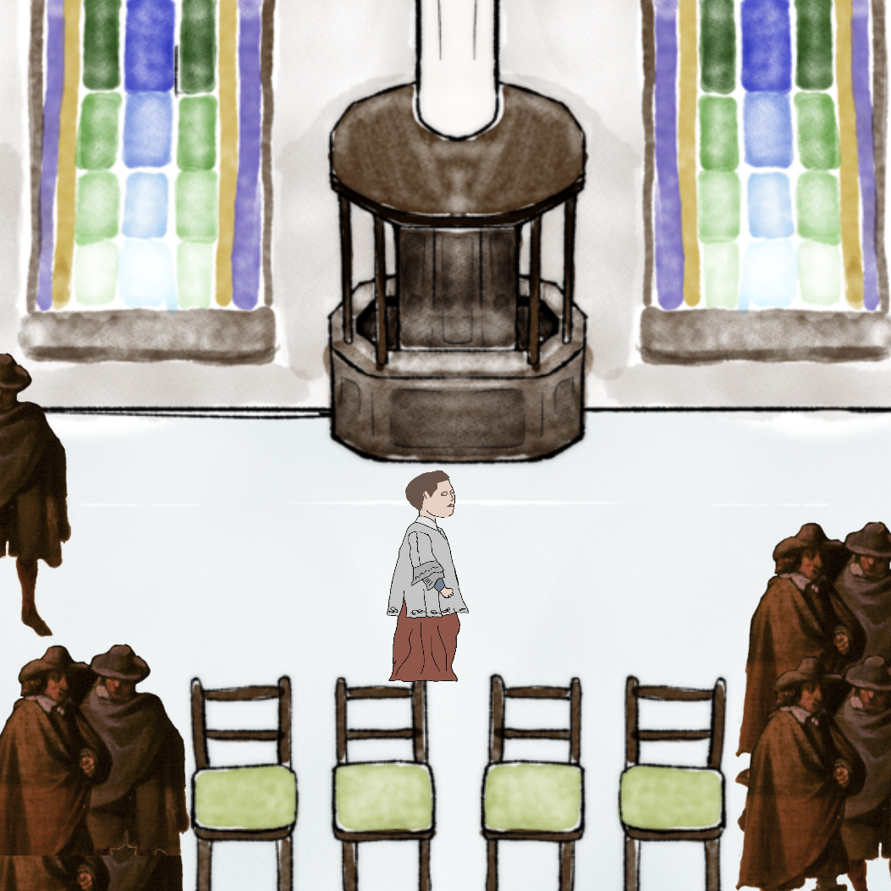
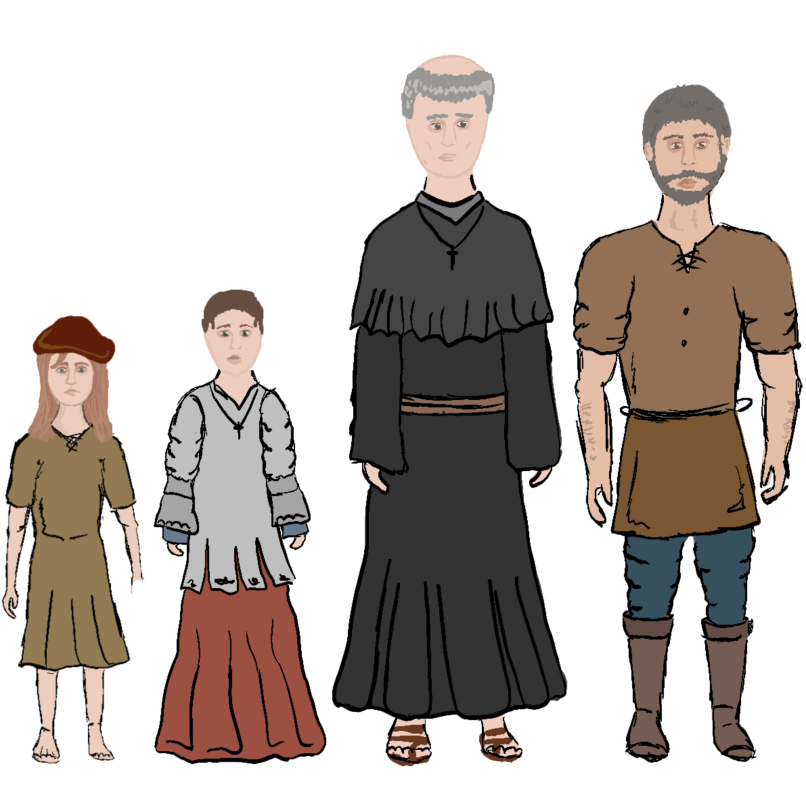
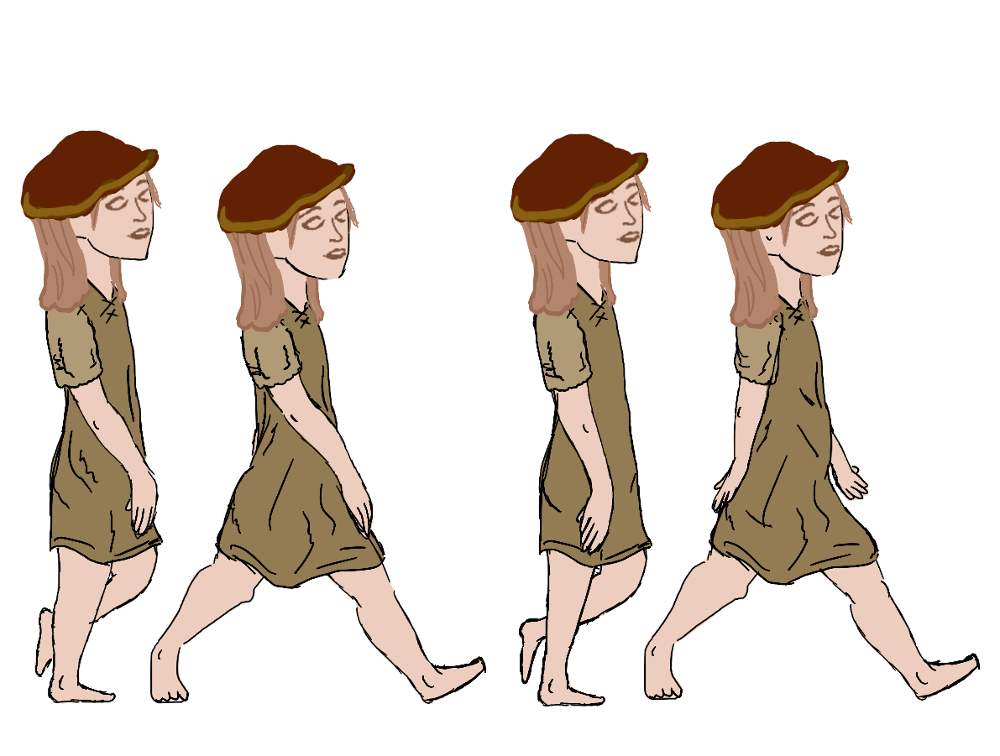
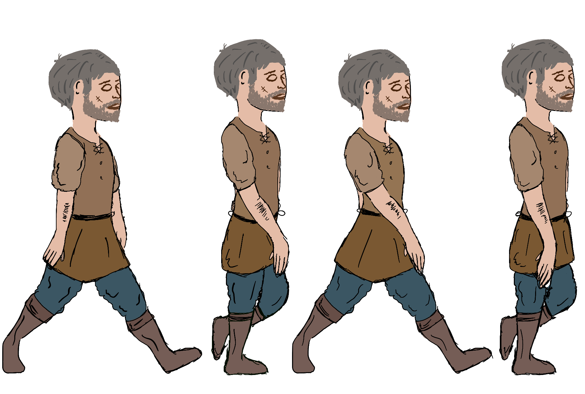

Amsterdam Museum Game
In opdracht van het Amsterdam Museum heb ik een game ontwikkeld die bedoeld is om jongeren van 14-17 jaar te enthousiasmeren voor een bezoek aan het museum. Daarnaast is het van belang dat de doelgroep een genuanceerde en dubbelzijdige geschiedenis van Amsterdam te zien krijgt. We hebben vijf weken in teamverband gewerkt op tot een definitief concept te komen. Dit concept is in het Amsterdam Museum gepresenteerd aan de opdrachtgever.
Het concept is een top-down game waarbij de speler als twee karakters uit de Amsterdamse geschiedenis speelt. Deze karakters vertellen allebei een eigen kant van de geschiedenis. Zo kan de speler met een genuanceerde en open blik naar de geschiedenis kijken.
In onze game hebben wij de beeldenstorm uitgewerkt. In de game kan je spelen als Maria; dochter van een protestantste pottenbakker, óf Johannes; misdienaar in de katholieke kerk. De focus van het spel ligt op informeren en daarom hebben wij beide partijen even juist of onjuist doen voorkomen. In het spel kan de speler lopen, interacties aangaan en keuzes maken. Wij hebben ervoor gekozen om een beeld en schilderij uit het museum in de game te verwerken, zodat de speler ook de terugkoppeling naar het museum ervaart.
Tijdens dit project ben ik verantwoordelijk geweest voor uitwerken van het verhaal en het maken en animeren van de ‘assets’. Dit heb ik gedaan door te tekenen in Procreate, zodat de assets aansluiten op de afgesproken stijl (schetsend).
  